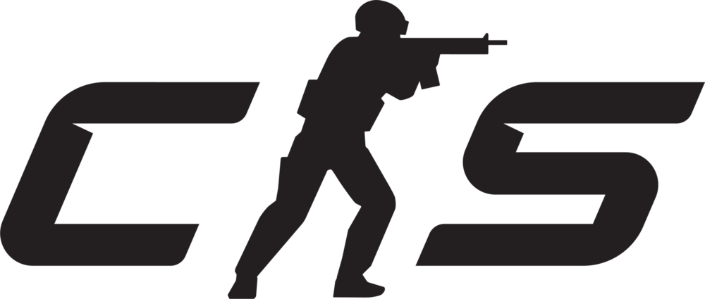
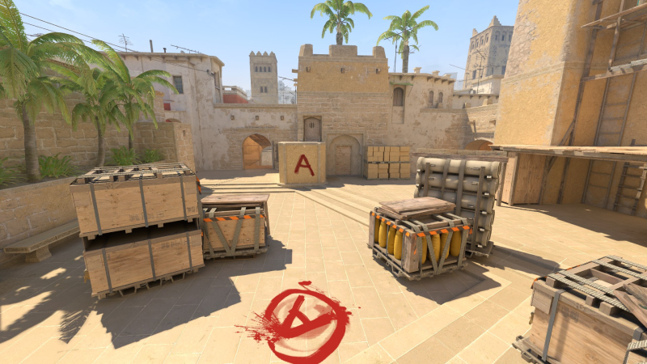
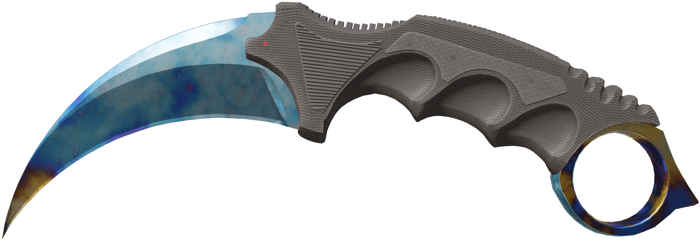

Counter Strike 2

Counter Strike 2 je multiplayerová počítačová online střílečka z první osoby (FPS). Byla vyvinutá společností Valve Corporation. Hra byla oficiálně vydána 27. září 2023. Číslo 2 v názvu nové části označuje přechod na novou verzi engine Source 2.
MAPY
V Counter Strike 2 je velký výběr map a jsou nedílnou součástí této hry, zároveň se na nich konají všechny akce
Velký počet map je vytvořen samotnými hráči, kteří je poslali společnosti Valve aby měli v této videohře svou stopu.
Každá mapa má své umístění: například mapa Mirage se nachází v Maroku, mapa Inferno v Itálii, Nuke ve Spojených státech atd.
ZBRANĚ
Je několik kategorií: Pistole, Střední úroveň, Pušky a posledně různé házeí předměty.
Každá strana, Teroristé a Counter-Teroristé, mají své začínající pistole: Glock-18 a USP-S resp. Mohou si ale zakoupit jiné jako např. Desert Eagle, Tec-9, Five-SeveN atd. Ve střední úrovni najdeme SMG a brokonvice, např. MP9, MP5, XM1014 atd. V té nejvyšší kategorii najdeme M4A1-S, AK47, AWP, M4A4 a mnoho dalších. A posledně jsou také házecí předměty: oslepující granát, zápalný granát/molotov, ruční granát a návnada.

ESPORT
Konají se také velké Esportové turnaje s přezdívkou Major. Poslední se konal v Kodani mezi 17.3 až 31.3 tohoto roku.
Součást každého takového Majoru jsou ruzne sběratelské předměty: např. Kapsule s nálepkami týmů či hráčů nebo různé kolekce ze zápasů na jednotlivých mapách.
Prize pool minulého turnaje byl 1.250.000 dolarů, z čehož vítězi - Natus Vincere, zkráceně NAVI, šlo na konto 500.000 dolarů.
 SKINY
SKINY
Jedna neoddělitelná čast Counter Striku jsou jednoznačné skiny. Jsou to vpodstatě povrchy na vaše zbraně. Nejlevnější začínají na 3 centech ale cena se může astronomicky vyšplhat.
Nejdražší jsou zpravidla skiny na nože, nejdražší skin v historii CS je staále Karambit s patternem Blue Gem-387, nabídlo se za něj 1.25 milionu dolarů ale tato nabídka byla rázně odmítnuta.
Bohužel součáastí skinů je také gambling, jelikož skiny obdržíte zpravidla pouze ze zakoupených krabic, které mají různé názvy a v každé je jiný obsah.
Jsou také různé rarity skinů: Šedé-Consumer Grade,Světle modré-Industrial Grade,Modré-Mil Spec,Fialové-Restricted,Růžové-Classified a Červená-Covert
Česká stránka CS.